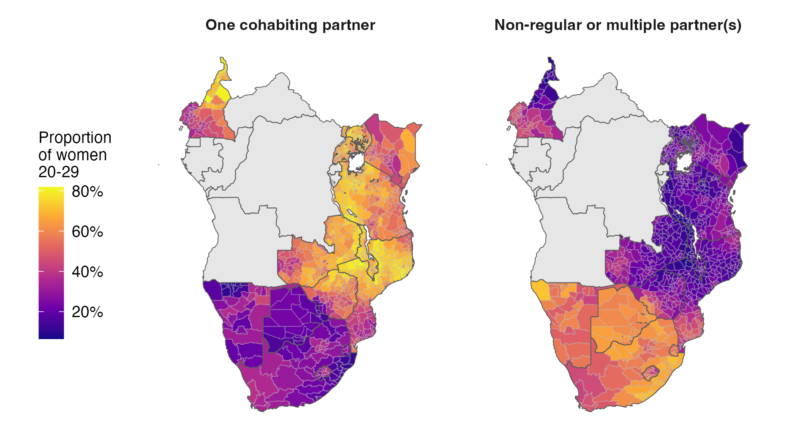
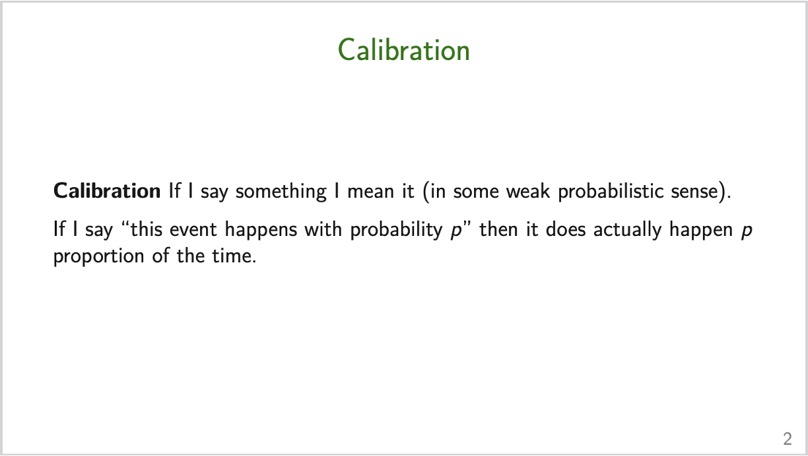
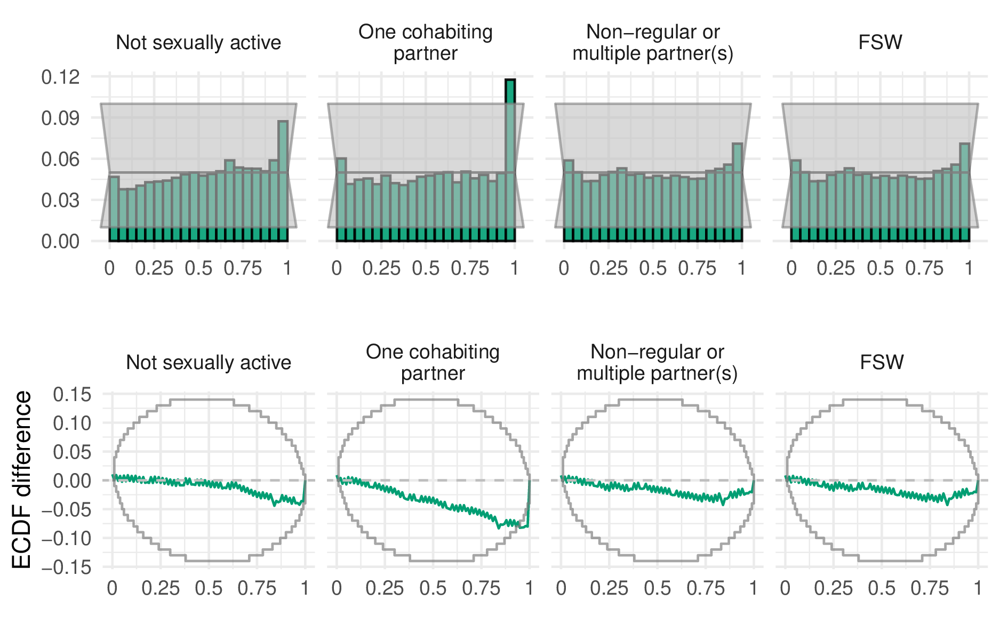

Estimating risk group proportions: informal discussion
A summary, some potentially useful takeaways, and reflections on the paper ‘Spatio-temporal estimates of HIV risk group proportions for adolescent girls and young women across 13 priority countries in sub-Saharan Africa’
Recently the first paper (Howes et al. 2023) from my PhD was published! It represents many hours of work. Exactly how many I might prefer not to think about. It would be odd to allocate all that effort to writing a paper1 and not think it’s also worthwhile to write an informal discussion. So here it is! The sections are quite disjoint, and can be read in any order, though starting with the summary first would make sense. If there are parts of the post you like, don’t like, agree with, disagree with, or otherwise have thoughts about, please have a low bar to reaching out to let me know!
Statistical
Multinomial regression in R-INLA
We used the statistical software R-INLA to implement inference for the model via integrated nested Laplace approximations (Rue, Martino, and Chopin 2009). For spatio-temporal models, INLA usually has comparable accuracy to Markov chain Monte Carlo, but is significantly faster. For more information, see the R-INLA project website.
Multinomial regression models are not straightforwardly comptible with R-INLA. As such, we used the well-known13 multinomial-Poisson transformation (or Poisson trick) to reformulate the model as a Poisson regression. In paricular, suppose we would like to model the probability \(p_k\) of an individual being in one of \(K\) categories \(k = 1, \ldots, K\). In the multinomial regression formulation, we would model log-ratios of the form \[
\log \left( \frac{p_k}{p_K} \right) = \eta_k
\] for \(k = 1, \ldots, K - 1\), where \(\eta_k\) are some linear predictors14 and a sample of size \(m\) would have the multinomial likelihood \[
(y_1, \ldots, y_K)^\top \sim \text{Multinomial}(m; \, p_1, \ldots, p_K).
\] The reason this likelihood is not compatible with R-INLA is because it relies on an inverse link function \(g: \mathbb{R}^{K - 1} \to [0, 1]\), which takes more than one linear predictor as input \[
p_j = g(\eta_1, \ldots, \eta_{K - 1}) = \frac{\exp{\eta_j}}{1 + \sum_{k = 1}^{K - 1} \exp{\eta_k}}.
\] However, it is possible to equivalently write the model as a Possion regression that is compatible with R-INLA as follows \[\begin{align*}
y_k &\sim \text{Poisson}(\kappa_k) \\
\log(\kappa_k) &= \eta_k
\end{align*}\] for \(k = 1, \ldots, K\), for certain choice of linear predictor \(\eta_k\).
I will try to give an intuitive explanation for the equivalence of the two models. First, it’s quite well known that conditional on their sum, Poisson random variables have a multinomial distribution. Given this fact, notice that there are \(K\) equations here, when really we only have \(K - 1\) pieces of information. The additional quantity being estimated is exactly the sum, in other words the sample size, which is modelled as random according to \[ m = \sum_k y_k \sim \text{Poisson} \left( \sum_k \exp \eta_k \right). \] But wait, we know the sample size, so it’s data and should be fixed – no? The trick is by smart choice of \(\eta_k\) we can set things up so that \(m\) is perfectly estimated, essentially as though it were fixed. In particular, this smart choice is to set \(\eta_k = \theta + \ldots\) where \(p(\theta) \propto 1\). I call \(\theta\) an “observation-specfic” random effect. The reason this works is because:
- Inference for \(\theta\) allows perfect recovery of \(m\)15.
- Changing \(\theta\) does not change the category probabilities – which at the end of the day are the thing we are interested in. This can be seen as follows \[ p_j = \frac{\exp{\eta_j}}{\sum_{k = 1}^K \exp{\eta_k}} = \frac{\exp{(\eta_j + \theta)}}{\sum_{k = 1}^K \exp{(\eta_k + \theta)}}. \]
Invariance to addition of a constant is also something to keep in mind when specifying the rest of the model structure. Changing the category probabilities requires the linear predictors to vary by category. As a result, all other random effects in the model must be interacted with category, otherwise they will have no effect.
For two-way interactions this is quite easy. For example, to specify IID age effects, we would use something like
+ f(age_idx, model = "iid", group = cat_idx,
control.group = list(model = "iid"), constr = TRUE,
hyper = multi.utils::tau_pc(x = 0.001, u = 2.5, alpha = 0.01))For three-way interactions it’s a little harder, and depending on the type of structure you might run into road-blocks. For example, I wanted to include space-time interactions: which would have to be implemented as space-time-category interactions. With some effort I was able to write these models, and fit them to single countries, but when trying to fit to all countries jointly the computation got prohbitive.
For further reading, you could try the paper’s mathematical appendix or code.
Model assessment
We selected the final model to used, for both the multinomial and logistic regressions, based on the conditional predictive ordinate (CPO) criterion (Pettit 1990). This was mostly done for convenience: the CPO can be calculated in R-INLA without requring model refitting. Although the models we considered were not very computationally intensive when fit to individual countries, running all of the countries jointly was relatively involved. As such, refitting the model many times in any kind of cross-validation scheme is unappealing. I do think there is more that could have been done here with more thought though, and will keep trying to stay up to date with Aki Vehtari’s model selection notes.
Having fit the model, we did try to assess coverage in a relatively modern way. In particular, we used probability integral transform (PIT) histograms and empirical cumulative difference function (ECDF) difference plots. For the ECDF difference plots, we used the simultaneous confidence bands of Säilynoja, Bürkner, and Vehtari (2022). As to what these plots are, I’m sure there are better sources, but you could try this lab meeting presentation I gave – Figure @ref(fig:calibration) contains the first slide of which.

Anyway, the results of this analysis, faceted by risk group, are shown in Figure @ref(fig:coverage). Although this exercise did increase my confidence in the estimates produced being reasonable, I have not yet figured out how to consistently use diagnostics like this to iteratively improve the model. For example, the results here suggest that, for the one cohabiting partner risk group, too often the quantile of the data within the posterior predictive distribution is in the upper tail. This is interesting to know, but how should the model be altered based on this information? In other situations, for example if the pattern was either “U” or “V” shaped, I might have some suggestions, but here I’m unsure.

Joint variance priors
Working on spatial statistics you come across some good ideas about prior specification16. One of these good ideas is that we should try to place priors on quantities we can interpret, and ideally have some domain knowledge about. For example, one could try to specify priors for the amount of structured spatial variation and the amount of unstructured spatial variation – as in the BYM model (Besag, York, and Mollié 1991)) – but it’d be far easier to specify priors for the total amount of spatial variation and the proportion of it you think is structured – as in the BYM2 model (Simpson et al. 2017).
While working on this project I was adding random effects to the model, each of which with the same penalised complexity prior on the standard deviation, and it occurred to me that this was inadvertently altering my prior on the total amount of variation in risk group proportions, which isn’t something I had been meaning to do. As such, it could be preferable to specify a prior for the total amount of variation, and the proportion attributable to each random effect. I think this was a good idea, because someone else did it recently in a paper called “Intuitive joint priors for variance parameters” (Fuglstad et al. 2020) with an accompanying R package called makemyprior. Although in the end I didn’t try these types of prior in this work, it’s definitely something I will attempt in future – as well as more generally being thoughtful about prior specification whenever possible.
Other
Paper writing workflow
All materials relating to the paper17 are available on Github. I made relatively extensive use of Github, partially because I think open science is important, and partly because seeing little green dots makes feel as though things are moving forward18. Within the repository, I used the docs sub-folder to host a Github pages website with statically generated HTML webpages. For this project, I mostly used this as a way to host presentations19.
The repository is structured using orderly, a workflow package developed within the MRC GIDA. This package, and the existing research infrastructure of the HIV Inference Group20, made doing this work significantly easier, and the end product better. Rather than me doing a subpar job telling you about it, take a look a this presentation by Rich FitzJohn (2023): Have I got Data for You? Data versioning and management in a pandemic.
The paper was written using R Markdown, together with the rticles package to provide journal-specific formatting. The main benefit of using R Markdown and orderly together is that the paper can be automatically updated once work upstream changes. This includes inline numbers, tables (generated using gt), and figures (generated using ggplot2). If these changes had to be made manually, even putting aside the time it would take, the chance of making an error is much higher. The downside of doing things this way is that it’s slightly annoying to collaborate with others. The option I went with was to generate a .tex file from R Markdown, then upload it to Overleaf for coauthors to give input, which worked well enough.
Personal reflection
I’m glad I got the opportunity to do some substantive applied statistics during my PhD. People really do care about the numbers reported in the paper, and that’s very motivating, if a little scary. Even putting aside the fact that I think the point of our work should be to have impact measured in QALYs rather than citations, I’ve found it helpful to do this work for my development as a statistician. In particular, I think it’s given me some amount of perspective as to which things really matter to an analysis. Without high quality data, and robust pipelines to handle it, there is little point in our contrived models for spatial structure or baffling inference procedures, as interesting as they may possibly be. This point has been clearly articulated by Max Roser of Our World In Data, where during the COVID-19 pandemic the world failed to meet even basic data needs. This gives me some pause as a statistician. I like models and personally enjoy modelling, but if I care about impact, am I wasting my time doing this work, rather than attempting to intervene somewhere along the pipeline with higher leverage?
In a similar vein, one could argue that statistics as a field is failing to help scientists uncover the truth – in other words, to do good science. Sure, it’s true there are plenty of other systemic factors and incentive structures holding things back. But when there is so much work built on unsound use of statistics you would have to hope that we as a field could do better. I don’t know what that looks like21, but if anyone has any ideas my inbox is open!
References
Besag, Julian, Jeremy York, and Annie Mollié. 1991. “Bayesian image restoration, with two applications in spatial statistics.” Annals of the Institute of Statistical Mathematics 43 (1): 1–20.
Fuglstad, Geir-Arne, Ingeborg Gullikstad Hem, Alexander Knight, Håvard Rue, and Andrea Riebler. 2020. “Intuitive Joint Priors for Variance Parameters.”
Howes, Adam, Kathryn A. Risher, Van Kính Nguyen, Oliver Stevens, Katherine M. Jia, Timothy M. Wolock, Rachel T. Esra, et al. 2023. “Spatio-temporal estimates of HIV risk group proportions for adolescent girls and young women across 13 priority countries in sub-Saharan Africa.” PLOS Global Public Health 3 (4): 1–14. https://doi.org/10.1371/journal.pgph.0001731.
Pettit, LI. 1990. “The Conditional Predictive Ordinate for the Normal Distribution.” Journal of the Royal Statistical Society: Series B (Methodological) 52 (1): 175–84.
Rue, Håvard, Sara Martino, and Nicolas Chopin. 2009. “Approximate Bayesian inference for latent Gaussian models by using integrated nested Laplace approximations.” Journal of the Royal Statistical Society: Series B (Statistical Methodology) 71 (2): 319–92.
Säilynoja, Teemu, Paul-Christian Bürkner, and Aki Vehtari. 2022. “Graphical Test for Discrete Uniformity and Its Applications in Goodness-of-Fit Evaluation and Multiple Sample Comparison.” Statistics and Computing 32 (2): 32.
Simpson, Daniel, Håvard Rue, Andrea Riebler, Thiago G Martins, Sigrunn H Sørbye, et al. 2017. “Penalising model component complexity: A principled, practical approach to constructing priors.” Statistical Science 32 (1): 1–28.
Footnotes
That presumably few people will read.↩︎
Exactly what “appropriate” means is a topic one could spend a long time arguing about.↩︎
A major feature of the HIV/AIDS response globally is to focus efforts on those populations most at risk of HIV infection. This is exemplified by the Global AIDS Strategy 2021-2026, whose headline is: “End inequalities. End AIDS.”.↩︎
Obtained from the ALPHA Network.↩︎
I use scare quotes here because there are some quite significant caveats, or assumptions made here.↩︎
For a clearly illustration of how this works, see Slide 22 onward in this presentation.↩︎
I made up this name. Is there an existing or better one?↩︎
Besides, many things required for multiple analysis are best practice for a single analysis. You don’t really want to handle tens of countries ad-hoc.↩︎
And I’m sure that there are never any issues with those estimates! If it’s not clear, that’s a joke, there will always be issues, but I do think their rate and or significance will be lower than a model where estimates are produced externally.↩︎
Connection here to a previous catchily titled blog post: Some thoughts on reporting a (posterior) distribution. It’s difficult to separate the science from the scientist and their aims.↩︎
The name “small-area estimation” is a bit of a misnomer. Really, the name “small-data estimation” is better suited.↩︎
Even better if I showed you this in a plot of the sample sizes!↩︎
In some circles.↩︎
Putting the \(K\)th probability in the denominator, as what is sometimes called the reference category, is just one way to do this, there are many other valid approaches. Only \(K - 1\) equations are needed because the category probabilities are mutually exhaustive such that \(\sum_k p_k = 1\).↩︎
Note that there are some tricky questions here as to what it means to simulate data from this model, since doing so naively would result in varying values for \(m\). I got around this by first simulating probabilities, then simulating multinomial observations from those probabilities.↩︎
Thanks Dan Simpson!↩︎
Including the code, manuscript, appendix, presentations, and replies to reviews.↩︎
Which is helpful for things like PhDs where motivation is usually more internal than external.↩︎
In later work, my use of the pages feature has become much more obnoxious (e.g. using it to host large R Markdown notebooks).↩︎
Such as processed shapefiles for each of the countries.↩︎
Popularising Bayesian workflow? Late-stage methods development? Shaming people with funnel plots or p-curves?↩︎